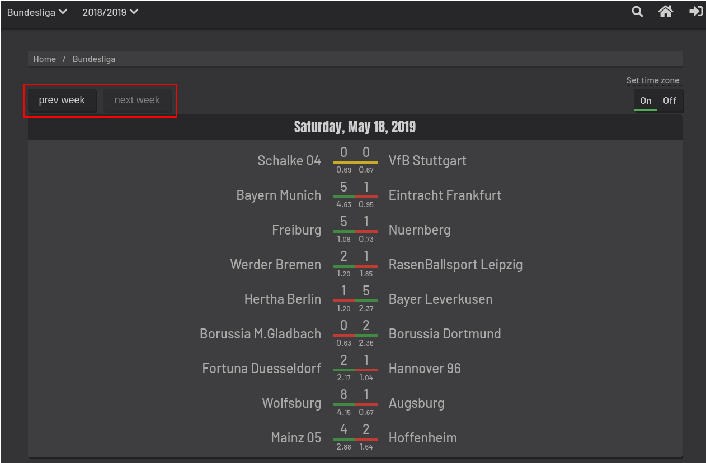
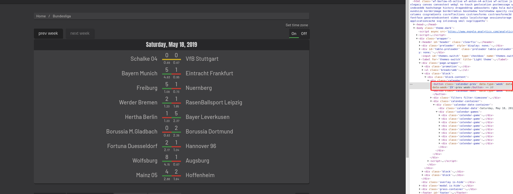
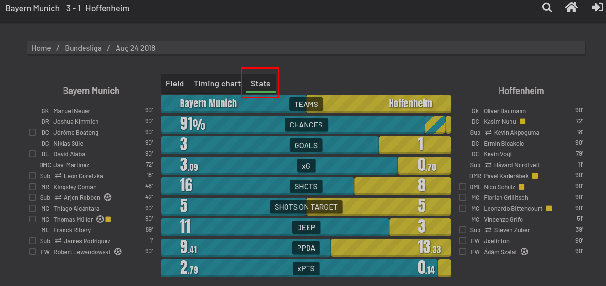

The beautiful Game - Scraping xG and xGA from understat.com
Tue, Jan 5, 2021
10-minute read
In recent years, soccer has increasingly become a multi-billion euro industry. In order identify drivers of success and to better analyze the matches, more and more (match) data is collected and new metrics are used to describe the teams’ performance. Two of such new metrics are the so called expected goals (xG) and expected goals against (xGA). xG try to quantify not only how many shots and chances a team had during a game, but also aims at quantifying the quality of these chances, considering from where the shot was taken, the angle to the goal and how many opponents were still between the ball and the goal. xGA are very similar to xG, but try to quantify the expected goals a team would concede. xG and xGA can also be seen as being the probability of a shot scoring a goal. Hence, xG/xGA are always between 0 and 1 for a single shot.
Since these metrics are fairly new, they are often not included in post match statistics. One of the few websites which report these is understat.com. In this project, I use python and the selenium package to click through the webpage and extract the reported post match data for all matches and leagues for which there are data given.
1. Investigating the website
The first step in each web scraping project is to take a look at the webpage and identify the steps needed to get to the desired data. understat provides data for 6 major leagues: Premier League (EPL), La Liga (La_liga), Bundesliga (Bundesliga), Serie A (Serie_A), Ligue 1 (Ligue_1), and the Russian Premier League (RFPL). The landing page for the respective league can be accessed via:
where xxx is the league’s abbreviation given in parentheses above. The landing page shows the upcoming matches in the respective league. To explicitly choose a season it is possible to add the starting year of the season, e.g. to get to the results for the Bundesliga from the season 2018/2019, the link would be
The first season, for which there is data is 2014/2015.
In the following I use the Bundesliga season of 2018/2019 as an example to further guide through the code and the data extraction process. When opening the link to this season, there are two buttons which can be used to navigate through the season, previous week and next week:

However, when navigating through the season, the link does not change at all, and accessing the above stated URL always points to the landing page, i.e. the upcoming matches or the last matchday of the season. Hence, storing the links in a list, going through this list and extract the data using beautifulsoup for example, would not work. We need a solution which independently clicks through the page and extracts then extracts the relevant data.
2. Web Scraping with Selenium
Here is where Selenium comes into play. The documentation states in the introduction:
Selenium Python bindings provides a simple API to write functional/acceptance tests using Selenium WebDriver. Through Selenium Python API you can access all functionalities of Selenium WebDriver in an intuitive way. Selenium Python bindings provide a convenient API to access Selenium WebDrivers like Firefox, Ie, Chrome, Remote etc.
In this project, we use Selenium in combination with the Chrome Webdriver to click through the pages and access the relevant information. We will run chrome in headless mode to avoid opening an actual browser window. A short function is written to initialize the browser:
def initialize_browser(headless=True):
"""
:param headless: bool, should chrome run in headless mode, i.e. in background
:return: browser object used for all other functions
"""
# set chrome options
chrome_options = webdriver.ChromeOptions()
chrome_options.add_argument("--disable-gpu")
chrome_options.add_argument("--disable-extensions")
chrome_options.add_argument("--no-sandbox")
if headless:
chrome_options.add_argument("--headless")
# Initialize a new browser
browser = webdriver.Chrome(options=chrome_options)
return browser
browser = initialize_browser()
The next step is to point selenium to the buttons which are to be clicked on. To find the elements we are looking for, we open the webpage in chrome, right-click on the page, and select “Inspect”. In the window on the right we click on “Select an element in the page to inspect it” and click on the “prev week” and “next week” buttons. From the panel on the right we can see the classes of these buttons and use the “find_element_by_class_name” function to find them. This approach is used for all the elements we find to find throughout this project.

We can then use the information we have until this point to access the landing page and click to the first week of the season with the following code:
browser.get("https://understat.com/league/bundesliga/2018")
prev_week = browser.find_element_by_class_name("calendar-prev")
while prev_week.is_enabled():
prev_week.click()
We now need to write the functionality to extract the relevant match data for all the matches for each week. We will let Selenium imitate the following workflow:
- click on a match
- select the “Stats” tab
- find the classes of all the stats listed and store them in variables

In addition to the class names, we also use XPaths to easily find the match data. This can be done in the same way as before using the “Inspect” tab. In order to extract the data and to keep the code readable, we define some helper functions, which edit the strings into the desired format:
def get_element(className, browser):
"""
:param className: string - name of the class which is to be retrieved
:param browser: browser object, initialized by initialize_browser()
:return text of element as string
"""
regex = re.compile(r"[\n\r\t]") # compile regular expression
element = browser.find_element_by_class_name(className) # find element
element = element.get_attribute("innerText") # extract html
element = regex.sub("", element) # remove unwanted parts of the string
return element
def get_element_xpath(xpath, browser):
"""
:param xpath: string - xpath to the element which is to be retrieved
:param browser: browser object, initialized by initialize_browser()
:return: text of element as string
"""
element = browser.find_element_by_xpath(xpath).get_attribute("innerHTML")
return element
def get_float(xpath, browser):
"""
:param xpath: string - xpath to the element which is to be retrieved
:param browser: browser object, initialized by initialize_browser()
:return: element as float object
"""
element = get_element_xpath(xpath, browser)
regex = re.compile(r"<[^>]+>")
element = regex.sub("", element)
element = float(element)
return element
def get_date(xpath, browser):
"""
:param xpath: string - xpath to the date element
:param browser: browser object, initialized by initialize_browser()
:return: date as datetime object
"""
element = get_element_xpath(xpath, browser=browser)
element = datetime.strptime(element, "%b %d %Y")
return element
The first function extracts contents from an element using its class name, the second does the same, but using the XPath as input, the third one converts the data into a float, and the last one extracts the date as a special date object. Building on these functions we define another function, which extracts all the data for a single match and returns it as a dictionary:
def scrape_match_infos(browser):
"""
:param browser: browser object, initialized by initialize_browser()
:return: all date for a single match from its corresponding page as a dictionary
"""
matchData = {
"date" : get_date("/html/body/div[1]/div[3]/ul/li[3]", browser=browser),
"homeTeam" : get_element("progress-home.progress-over", browser=browser),
"awayTeam" : get_element("progress-away", browser=browser),
"homeGoals" : int(get_element_xpath("/html/body/div[1]/div[3]/div[2]/div[1]/div/div[4]/div[3]/div[2]/div", browser=browser)),
"awayGoals" : int(get_element_xpath("/html/body/div[1]/div[3]/div[2]/div[1]/div/div[4]/div[3]/div[3]/div", browser=browser)),
"xgHome" : get_float("/html/body/div[1]/div[3]/div[2]/div[1]/div/div[4]/div[4]/div[2]/div", browser=browser),
"xgAway" : get_float("/html/body/div[1]/div[3]/div[2]/div[1]/div/div[4]/div[4]/div[3]/div", browser=browser),
"shotsHome" : int(get_element_xpath("/html/body/div[1]/div[3]/div[2]/div[1]/div/div[4]/div[5]/div[2]/div", browser=browser)),
"shotsAway" : int(get_element_xpath("/html/body/div[1]/div[3]/div[2]/div[1]/div/div[4]/div[5]/div[3]/div", browser=browser)),
"shotsOnTargetHome" : int(get_element_xpath("/html/body/div[1]/div[3]/div[2]/div[1]/div/div[4]/div[6]/div[2]/div", browser=browser)),
"shotsOnTargetAway" : int(get_element_xpath("/html/body/div[1]/div[3]/div[2]/div[1]/div/div[4]/div[6]/div[3]/div", browser=browser)),
"deepHome" : int(get_element_xpath("/html/body/div[1]/div[3]/div[2]/div[1]/div/div[4]/div[7]/div[2]/div", browser=browser)),
"deepAway" : int(get_element_xpath("/html/body/div[1]/div[3]/div[2]/div[1]/div/div[4]/div[7]/div[3]/div", browser=browser)),
"ppdaHome" : get_float("/html/body/div[1]/div[3]/div[2]/div[1]/div/div[4]/div[8]/div[2]/div", browser=browser),
"ppdaAway" : get_float("/html/body/div[1]/div[3]/div[2]/div[1]/div/div[4]/div[8]/div[3]/div", browser=browser),
"xptsHome" : get_float("/html/body/div[1]/div[3]/div[2]/div[1]/div/div[4]/div[9]/div[2]/div", browser=browser),
"xptsAway" : get_float("/html/body/div[1]/div[3]/div[2]/div[1]/div/div[4]/div[9]/div[3]/div", browser=browser)
}
return matchData
We want the script to do this for all the matches found on a week’s landing page. However, when clicking on a match and then returning to the overview for the week by clicking the browser’s “back” button, understat displays the current or last week of a season again. Therefore, after navigating to the desired week overview page, the elements to all the matches are found and the corresponding links are extracted and stored in a list. In a second step, the code iterates over this list of links to the matches, opens the links and extracts the match infos. The information is then stored in a list of dictionaries and returned by the function.
def scrape_page(browser):
"""
:param browser: browser object, initialized by initialize_browser()
:return: data for all matches from a "week overview" page
"""
# initialize empty list for match data and links
dicts = []
links = []
# get all matches from a page and save links
matches = browser.find_elements_by_class_name("match-info")
for m in range(len(matches)):
links.append(matches[m].get_attribute("href"))
for link in links:
browser.get(link)
matchInfos = scrape_match_infos(browser=browser)
dicts.append(matchInfos)
return dicts
Since we are now able to get all the data for one week, we want to apply this function to every week of the season. The “scrape_season” function defined below does exactly that. As an auxiliary step, the number of weeks in a season is counted by clicking through the whole season. The first week of a season is then accessed by clicking on the “prev week” button as many as times as there are weeks in the season, and all the match data for this week is extracted using the “scrape_page” function. After this step, the weeks counter is decreased by one, such that during the next iteration, the data for the second week of the season is extracted, and so on. This is done until the last week of a season is reached. All the gathered information is then combined into a single list and converted into a pandas DataFrame.
def scrape_season(league, season, browser):
"""
:param league: string - name of the league for which data is to be retrieved;
one out of ["EPL", "La_liga", "Bundesliga", "Serie_A",
"Ligue_1", "RFPL"]
:param season: list - seasons for which data should be collected
possible values: [2014, 2015, 2016, 2017, 2018, 2019]
:param browser: browser object, initialized by initialize_browser()
:return:
"""
print("Getting data for {}: Season {}.".format(league, season))
# initialize empty list for data storage
allMatches = []
# define url
url = "https://understat.com/league/" + league + "/" + season
# open landing page
browser.get(url)
# find button for previous week and next week
prev_week = browser.find_element_by_class_name("calendar-prev")
# go to the first week and store the number of pages per season
numOfPages = 1
while prev_week.is_enabled():
numOfPages += 1
prev_week.click()
# scrape all the pages
while numOfPages >= 1:
browser.get(url)
prev_week = browser.find_element_by_class_name("calendar-prev")
for n in range(1, numOfPages):
prev_week.click()
matchday = scrape_page(browser=browser)
allMatches.append(matchday)
numOfPages -= 1
allMatches = list(chain.from_iterable(allMatches))
allMatches = pd.DataFrame(allMatches)
allMatches["season"] = season
allMatches["league"] = league
return allMatches
3. Putting it all together
We now have all the functionality we need to scrape a whole season. The only thing left now is a simple wrapper function, which can be used to scrape multiple seasons of a league. This function takes a league, a browser object and a list of seasons as inputs, iterates through all the seasons in the list and scrapes each of those. The data is then combined into a single DataFrame and returned.
def scrape_league(league, browser, seasons=[2014, 2015, 2016, 2017, 2018, 2019]):
"""
:param league: string - name of the league for which data is to be retrieved;
one out of ["EPL", "La_liga", "Bundesliga", "Serie_A",
"Ligue_1", "RFPL"]
:param browser: browser object, initialized by initialize_browser()
:param seasons: list - seasons for which data should be collected
possible values: [2014, 2015, 2016, 2017, 2018, 2019]
:return:
"""
# convert elements in season list to string
seasons = [str(season) for season in seasons]
leagueData = []
for season in seasons:
seasonDat = scrape_season(league=league, season=season, browser=browser)
leagueData.append(seasonDat)
# combine dataframes to single dataframe
leagueDF = pd.concat(leagueData)
return leagueDF
Combining all the steps described above, all the data for the Bundesliga from season 2014/2015 up to 2019/2020 can be retreived with the following lines of code (note that this may take some time):
browser = initialize_browser() # initialize the browser object
bundesligaData = scrape_league("Bundesliga", browser=browser)
Getting data for Bundesliga: Season 2014.
Getting data for Bundesliga: Season 2015.
Getting data for Bundesliga: Season 2016.
Getting data for Bundesliga: Season 2017.
Getting data for Bundesliga: Season 2018.
Getting data for Bundesliga: Season 2019.
The data can then be saved, e.g. as a CSV file:
bundesligaData.to_csv("bundesliga.csv")
Or into a .db file using sqlite:
con = sqlite3.connect("./soccerData.db") # create / connect to DB file
bundesligaData.to_sql("soccerData.db", con) # save data to DB